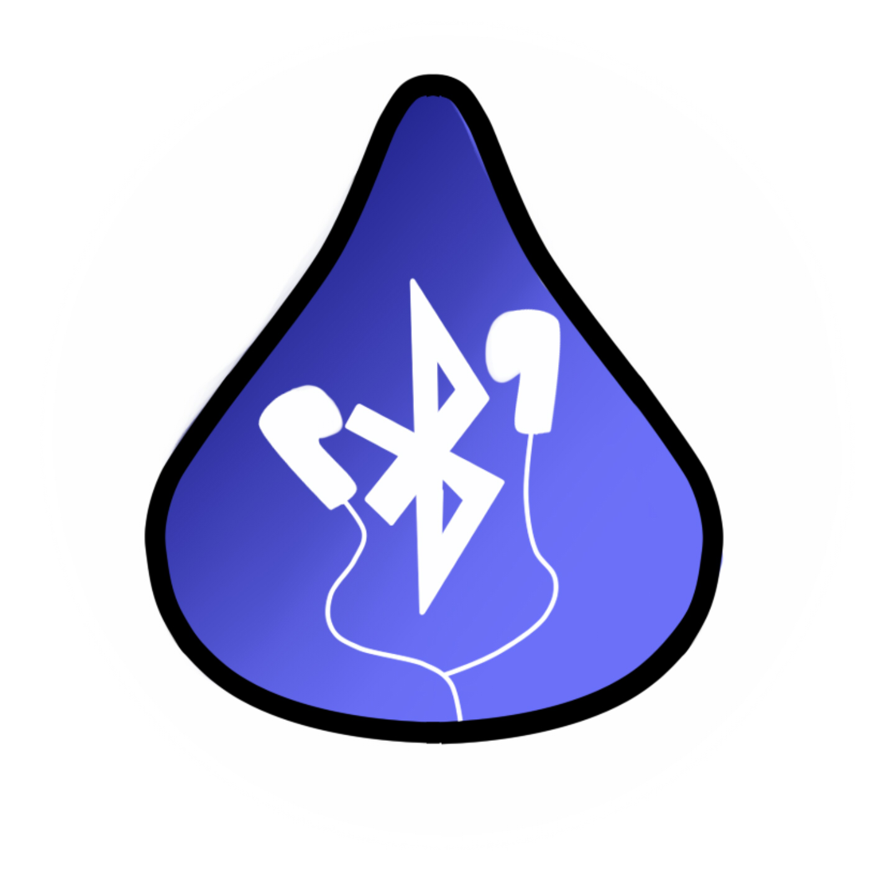

"Idea 5" is a small team of developers and a programmer who met through the Dublin High School Engineering Academy. Every year the academy has the entrepreneurship project; in which, the students need to create a product to solve a problem. Last year, Celine Lafosse and Aaron Register joined together to create the "Posture +". Although that project was a flop, they joined together once again, as well as Ian Lederer and Mounica Padakandla, to try something new. They went through many different ideas, from a tent heater to a better portable battery; finally, they settled with the Blu Reel. In the Computer Intergrated Manufactuing class, Ian, Aaron, and Mounica worked hard to create the prototype for the Blu Reel. Meanwhile, Celine worked on these pages which you are currently reading in her Computer Science Principles class. They hope this product can help many people fix this simple, yet common, problem.
